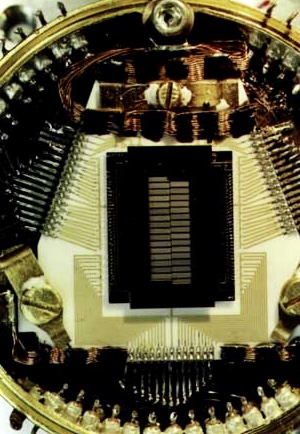

X-ray Astrophysics Group
Research
People
Publication
X-ray Detector Intro Text
XQC
The X-ray Quantum Calorimeter (XQC) project is a joint effort between the University of Wisconsin and Goddard Space Flight Center to resolve the spectrum of the soft (<1 keV) X-ray background using an array of micro-calorimeters. These micro-calorimeters, which operate at a temperature of 60 mK, provide an energy resolution of less than 10 eV at 1/4 keV. The XQC detector has been successfully launched two times in a sounding rocket from the White Sands Missile Range in New Mexico.
Introduction to X-Ray Quantum Calorimeter
XQC stands for X-Ray Quantum Calorimeter, a soft x-ray spectrometer used for suborbital astrophysical observations. The XQC sounding rocket payload is designed to study the diffuse X-Ray background in the energy range from 0.05 to 1 keV at very high spectral resolution. The diffuse x-ray background is thought to emanate from a local region of hot interstellar gas. Previous experiments have implied that this gas is a hot, low density plasma but did not have the resolving power to distinguish individual emission lines over a broad spectral range. This experiment is able to resolve line emission from the hot plasma.
The launch vehicle for the XQC detector is a Nike-Black Brant two stage sounding rocket. The rocket was assembled at White Sands Missile Range by NASA's Wallops Flight Facility. Sounding rocket flights are quite short in duration, approximately 15 minutes, but obtain an altitude above 220 km. The XQC experiment was designed to have an observing time of only 240 seconds during the flight, sufficient, however, to obtain a reasonable spectroscopic observation.
